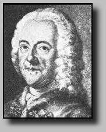

|
 |
Georg Philip Telemann (1681-1767) Catalogue TWV |
| Oeuvre | Publications | Références |
| Oeuvre |
|
En cliquant sur cette image, il est possible d'entendre des extraits d'oeuvres (fichiers MIDI)  |
| Publications |
|
| Références |
|
| 20. Cantates séculières |
| 21. Opéras et airs d'opéras |
| 22. Contributions aux opéras d'autres compositeurs |
| 23. Prologues pour opéras |
| 24. Oratorios séculiers |
| 25. Travaux pédagogiques, Odes, Leider, etc |
| 30. Fugues pour clavier |
| 31. Préludes de chorals |
| 32. Suites pour clavecin |
| 33. Fantaisies, Sonates, Concerti pour clavecin |
| 34. Menuets pour clavecin |
| 35. Pièces individuelles pour clavecin (Einselstucke) |
| 36. Recueil de manuscrits (Sammelhandschrift) |
| 37. Lustiger Mischmasch |
| 39. Oeuvres pour luth |